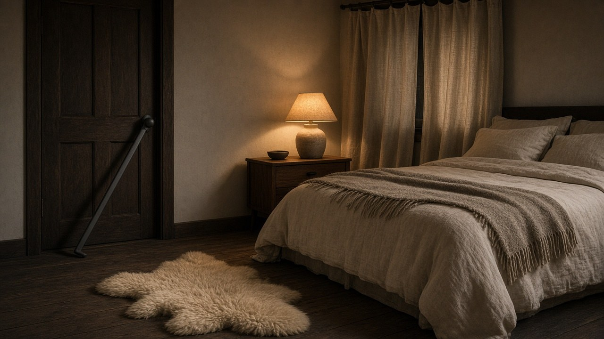
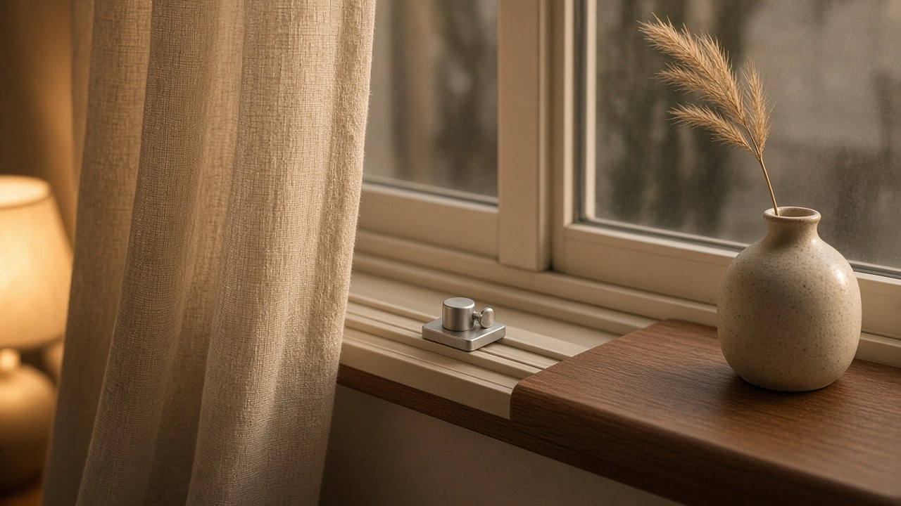
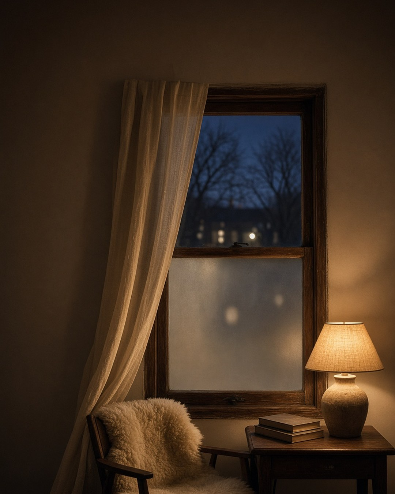

The street has turned blue, the way it does just after the lamps come on. The kettle clicks off. Someone draws the linen curtains halfway. And then, without anyone quite deciding to, the house is closed up for the evening.
It is not a fortress. It is not a house that looks like it is waiting for trouble. It is the quiet layer under the comfort: a door that sits the way you want it to, a window that opens only as far as you choose, glass that does a little more than let the light in. Most of it costs less than a good throw blanket. Almost none of it shows.
Some links on this page are Amazon affiliate links. We may earn a commission at no extra cost to you.
Three quiet layers
A hidden home closes up in three places. The doors, where the coming and going happens. The windows, the openings we think about least. And the glass itself, which can be made more private, and a little more resilient, without changing how a room looks.
None of these are a guarantee. None of them replace a good deadbolt, a solid door, or knowing your neighbors. They are small, practical additions — most of them renter-friendly, most of them gone without a trace when you move.
| Layer | What it is | What it is designed to do | Install |
|---|---|---|---|
| Door: portable lock | A small lock body with metal claws that hook into the strike plate of an inward-swinging door | Add a second point of hold from the inside | No tools; seconds |
| Door: security bar | An adjustable steel bar wedged between the knob and the floor | Brace a closed door from the inside | No tools; adjusts to the door |
| Door: wedge alarm | A floor wedge with a built-in siren | Sound an alarm when the door presses on it | No tools; one 9V battery |
| Window: track lock | A clamp that screws onto a sliding window's track | Hold the sash closed, or open only a few inches for air | No tools |
| Window: flip lock | A small hinged stop for wood double-hung windows | Block the lower sash from lifting past a set point | Small screws or nails |
| Window: contact alarm | A two-piece magnetic sensor with a chime or siren | Let you know when a door or window opens | Adhesive tape |
| Glass: safety film | A clear, thick film applied to the inside of the glass | Hold glass together if it breaks, and filter UV | Squeegee and water solution; afternoon project |
| Glass: privacy film | A frosted static-cling film | Blur the view in while letting soft light through | Water only; removable |
At the door

The simplest piece we know is the Addalock portable door lock, already on our gear page. Its metal claws hook into the strike plate of an inward-swinging door, the door closes on them, a rod slides in through the lock body, and the door has a second point of hold from the inside. No tools, no screws, nothing left behind on the frame. It travels in a small pouch, so it belongs as much to a rental cabin or a hotel room as to home. As of November 12, 2026, it was $14.95, in stock, sold by Rishon Enterprises Inc. and shipped from Amazon.
For a front door, or a bedroom door at night, the step up is a bar. The Buddybar door security bar, also on the gear page, is 8.2 pounds of powder-coated steel with no plastic parts, and it extends from 36 to 51 inches to fit most doors. It braces under the knob from the inside, on carpet, tile, wood, or concrete. It is the most expensive thing in this guide — $118.95 on November 12, in stock, sold by MPO Global and shipped from Amazon — and the one we would buy once and keep for years.
The third door piece does the least and says the most. The SABRE wedge door stop alarm slides under the door like any doorstop, on a non-skid pad, and sounds a 120-decibel alarm when the door presses down on it. One 9-volt battery, one low-battery light. SABRE notes it needs about a 7/8-inch gap under the door to trigger, so check yours first. It was $9.79 on November 12, in stock, sold by Amazon.com.

Addalock portable door lock
Hooks into the strike plate of an inward-swinging door. $14.95 as of November 12, 2026.
View on Amazon
Buddybar door security bar
Powder-coated steel, 36 to 51 inches. $118.95 as of November 12, 2026.
View on Amazon
SABRE wedge door stop alarm
A floor wedge with a 120-decibel alarm. $9.79 as of November 12, 2026.
View on AmazonAt the windows

Windows are where a house breathes. The best window hardware lets it keep breathing. For sliding windows, the Prime-Line sliding window security lock is a small aluminum clamp with a thumb screw that tightens onto the track. Set it against the sash and the window stays shut. Set it a few inches back and the window opens just that far, for air on a mild night. It fits rails up to 1/8 inch wide — measure before you buy — and needs no tools. It was $5.39 for a pack of four on November 12, in stock, sold by Amazon.com.
Older wood double-hung windows want something different. The Prime-Line U 9929 window flip lock is a small hinged piece in antique brass that sits on the side of the frame. Flip it out and the lower sash cannot lift past it; flip it back and the window opens fully. It is designed for wood single- and double-hung windows, and Prime-Line notes it is not recommended for dual-pane windows, so check yours. It was $8.16 for a two-pack, in stock, sold by Amazon.com. In antique brass, it looks as if it was always part of the house.
And then there is simply knowing. The UltraPro window and door alarm, 2-pack, already on the gear page, is a two-piece magnetic sensor that sticks to the frame with tape. Open the window and it plays a soft chime — or, switched over, a 120-decibel siren. No app, no wifi, no monthly fee; it runs on the included button batteries. It was $12.88 on November 12, down from a typical price of $16.36, in stock, sold by Amazon.com. We like it on the window nobody uses, and as a chime on the back door.
One thing to keep in mind: a bedroom window is also a way out. Choose locks that open from the inside in a second, and never fix shut a window someone may need in an emergency. Follow your local fire and building codes.

Prime-Line sliding window security lock
A thumb-screw clamp for sliding-window tracks. $5.39 for a pack of four, as of November 12, 2026.
View on Amazon
Prime-Line U 9929 window flip lock
A hinged stop for wood double-hung windows. $8.16 for a two-pack, as of November 12, 2026.
View on Amazon
UltraPro window and door alarm, 2-pack
A two-piece magnetic sensor with a chime or siren. $12.88 as of November 12, 2026.
View on AmazonOn the glass

Window film is the most invisible thing in this guide, and the one people ask us about most.
The BDF S8MC security and safety window film, 8 mil clear, 36 in × 12 ft is the same film as the larger roll on our gear page, in a size that suits a door light or a couple of ground-floor windows. It is a crystal-clear, 8-mil film applied to the inside of the glass. BDF says it is designed to absorb impact and hold shattered glass together, and lists it at 99% UV rejection, which also helps slow the fading of rugs and linen near a sunny window. It is not meant for heat control. It is a real afternoon project: a squeegee and knife come in the box, and a professional installer is worth it for large panes. It was $69.99 on November 12, in stock, sold by BuyDecorativeFilm and shipped from Amazon. (The 36 in × 49 ft roll on the gear page was $180.99 with delivery not until December 1–12.)
For privacy rather than strength, a frosted film does something curtains cannot: it keeps the light and loses the view. The rabbitgoo frosted glass privacy film, 17.5 × 78.7 in is a static-cling film that goes on with water, no glue, and peels off without residue — easy for a rental, easy to trim to a bathroom window or a front-door sidelight. It is a privacy film, not a security film. It was $5.99 on November 12, in stock, sold by Authorized Rabbitgoo Seller Globegou and shipped from Amazon. On a street-facing window, it does exactly what a hidden home wants. From inside, a soft white glow. From outside, a lit window and nothing more.

BDF S8MC 8 mil clear window film, 36 in × 12 ft
8-mil clear film, 36 in × 12 ft. $69.99 as of November 12, 2026.
View on Amazon
rabbitgoo frosted glass privacy film
Static-cling frosted privacy film, 17.5 × 78.7 in. $5.99 as of November 12, 2026.
View on AmazonClosed up for the evening
In the end, it is the same small ritual. The kettle, the lamp, the curtains. A bar under the bedroom door. A window open three inches and no further. A pane that glows instead of showing. Nobody walking past would notice any of it, and that is rather the point. The house looks the way it always has — softly furnished, lamplit, a little hidden — and it is closed up for the evening.
The full gear list is at lockandlinen.com/gear.